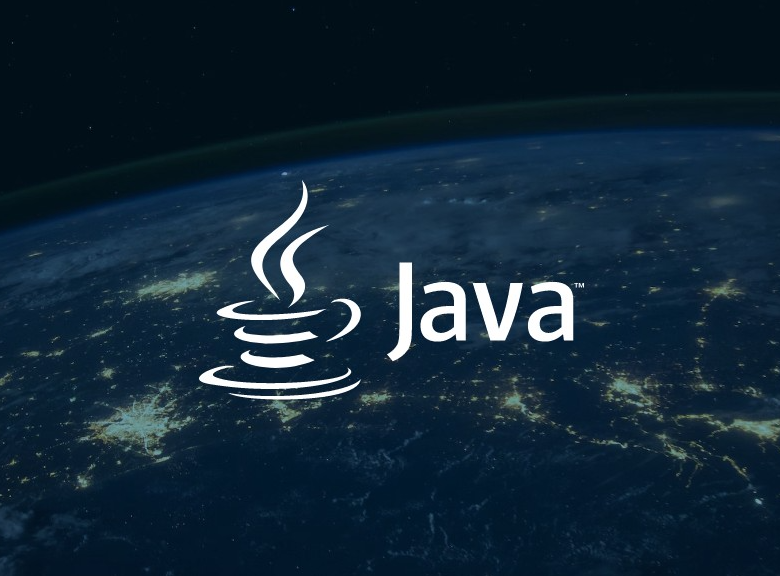

ISupervision ist ein konsolenbasiertes Java-Verwaltungssystem für Bachelor - und Masterarbeiten.
Java ist eine objektorientierte Programmiersprache die plattformunabhängig ist. Sie wird häufig für Desktop- und KOnsolenapplikationen verwendet.
IntelliJ IDEA ist eine der beliebtesten Entwicklungsumgebungen für Java. Sie bitet viele hilfreiche Features wue Code-Vervollständigung und Debugging.
